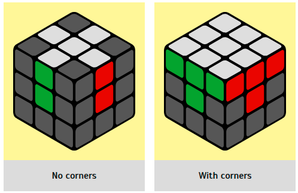

Stage 2. First layer
To create a flower, we need to find all 4 white edges and lift them to the yellow center.
It is very easy to do. You can do it intuitively and immediately move on to the next step.
|  |
Angles
1. Next we will collect the corners (3 colors on the element), as a result, we
should get the
whole first layer. But first we will learn a very simple but effective formula, which is called
pif-paf. It
consists of 4 movements RU R' U', and in simple words: up-left-down-right.
|